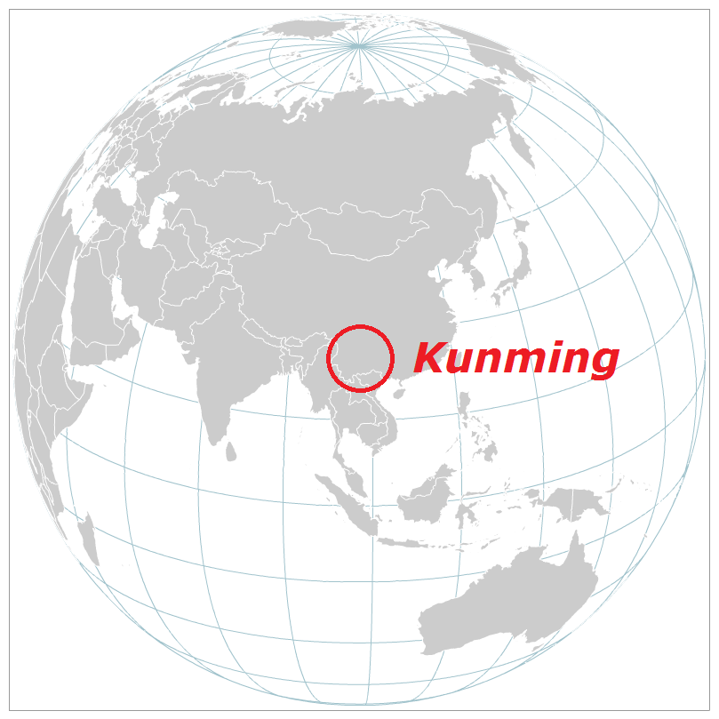
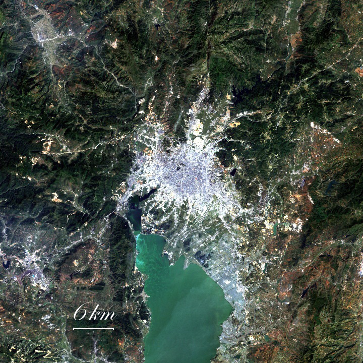
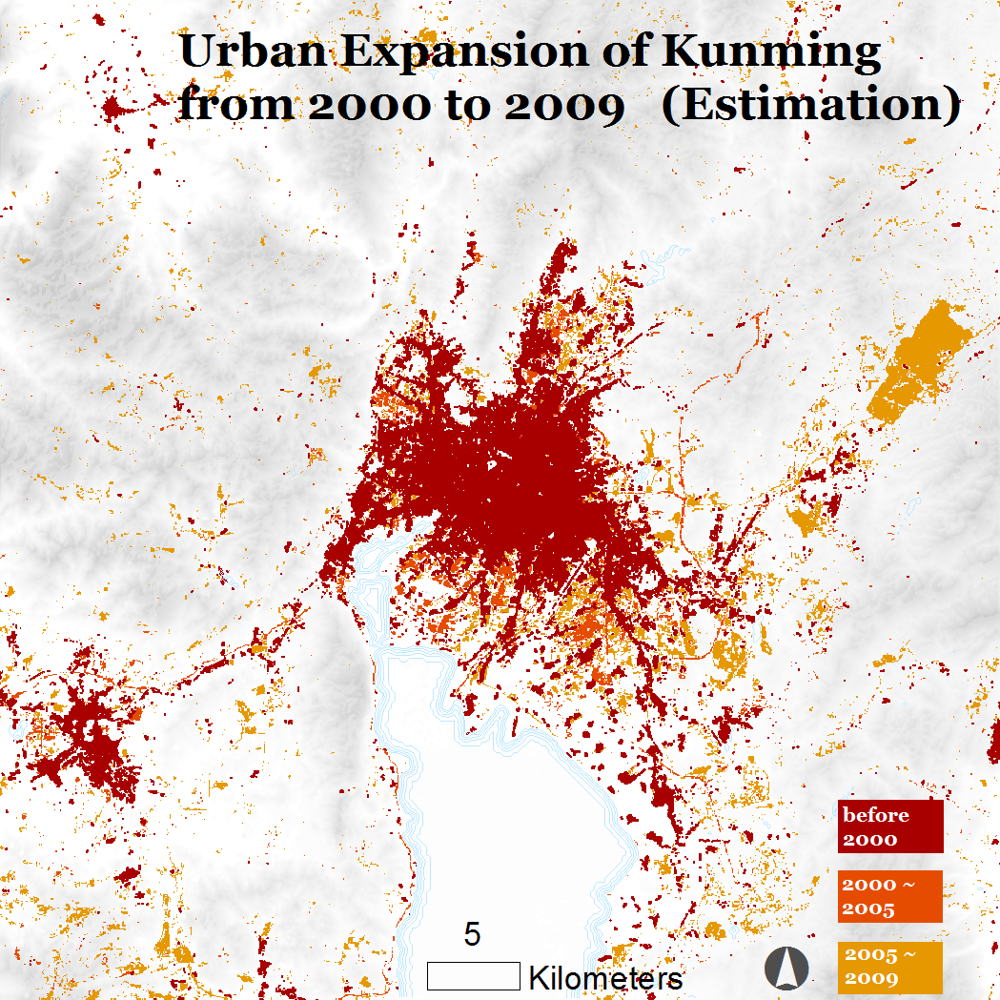
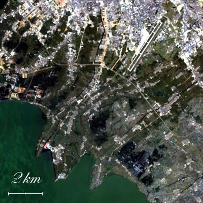
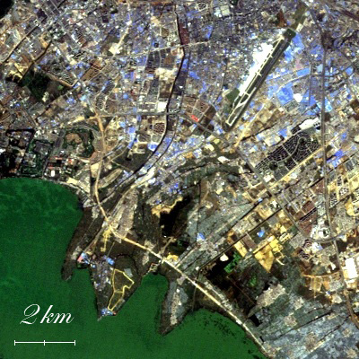
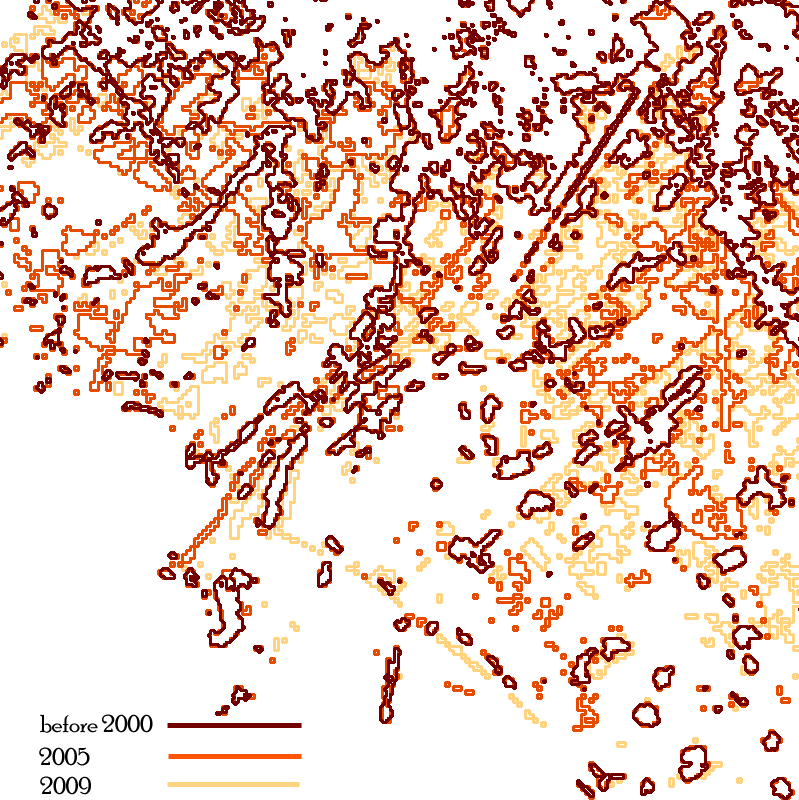
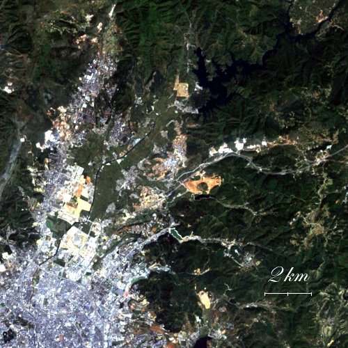
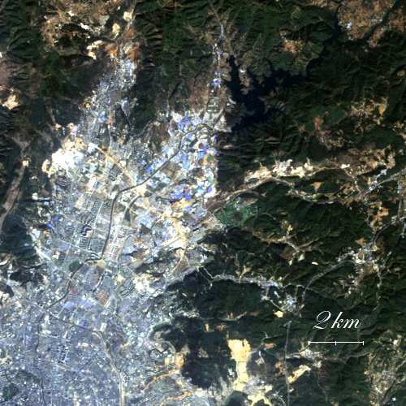
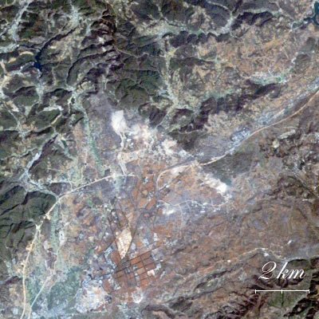
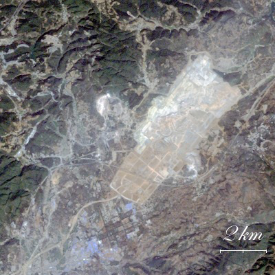

Kunming's Urban Expansion in the recent decade
Year 2000 to 2009

Kūnmíng (Chinese: 昆明, UN/LOCODE: CNKMG) is the capital and largest city of Yunnan (云南) Province in Southwest China. It was known as Yunnan-Fou (云南府, Yúnnánfǔ) until the 1920s. A prefecture-level city, it is the political, economic, communications and cultural centre of Yunnan, and is the seat of the provincial government.( wikipedia )
Ten-year period is two times the length of the life of the local government. Besides, it is a period long enough for urban developement observation. Since 2000, this city has witnessed new waves of urban development, along with both positive influences, and negative influences.
Part of this topic is based on the a news report about Kunming's urbanization and revitalization from Nanfang Weekend (南方周末) .



Case 1
Conflicts between downtown and villages are enlarged during the urbanization procedure leads to conflict between government and peasants. Just compensation cannot achieved during land acquisitions. Besides, lands of villages within the city are not developed in the proper ways after acquisitions. One of the hotspots is Hongren Village in Guandu District (in east portion of the image). Discussion on how its culture is protected and the way it develops have been focused on for quite a long time by mass media.



Case 2
Croplands are diminishing because of the growth of urban areas. Food security is facing a new problem.
Real estate development by Lakeshore of Dianchi Lake also causes uncertain ecological damage on wetland system.


Case 3
New infrastructures are kept built during recent years. One of them is the new Kunming Changshui International Airport. Opened on June 28, 2012, it replaced the old Kunming Wujiaba International Airport, which will be demolished. The main 548,300 m2 (5,902,000 sq ft) terminal of Changshui Airport is the second largest terminal building in China.


Left one is 2005, right one is 2009

Satellite data: Landsat TM ( Source USGS )
Population change during the decade
From 2000 to 2010, as amount of urban residents keep increasing, ratio of urban residents to total residents in Kunming has increased by 9.06 percent. Some of urban residents are imigrated from somewhere else, ans some are converted from rural residents. Accordingly, number of Kunming's rural residents has a net loss during this decade. Data source: Xinhuanet (新华网)
Ways To A More Sustainable Development
According to the survey and analysis, writers of the news report give some suggestions about how to make Kunming's urban development sustainable.
- Stop controversial demolition
- Should not expand the growth to rural area
- Take the social cost seriously
- Do not let the market control government
- Rebuild cedibility of government
- Maintain sustainability